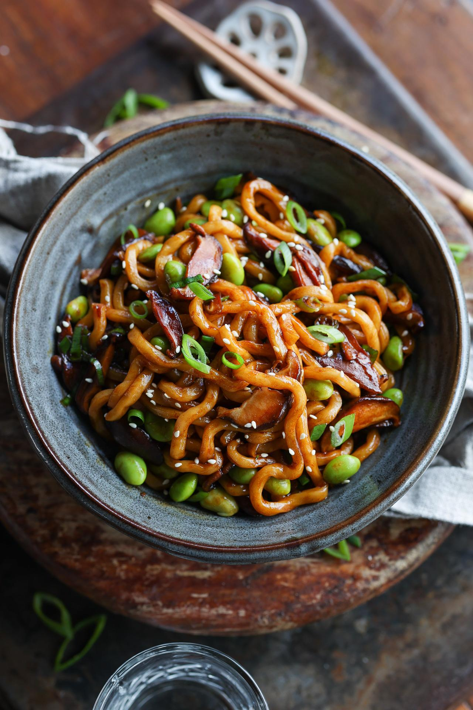

SHOYU BUTTER UDON NOODLES

Description
Thick chewy noodles are combined with shiitake mushrooms and edamame beans coated in a buttery, umami sauce. This recipe comes together more quickly than take-out and is just as delicious! It's the perfect meal for busy weeknights.
Ingredients
- 200 g pre-cooked udon noodles
- 14 g unsalted butter
- 100 g shiitake mushrooms, sliced
- 1½ tsp dark soy sauce
- 2¼ tsp mushroom stir-fry sauce, plus more to taste
- ¼ tsp garlic powder
- 51 g frozen shelled edamame
Steps
- Fill a saucepan with boiling water, and add the udon noodles. Cook for 2 minutes, then drain.
- Meanwhile, add the butter and mushrooms to a large pan on high heat. Cook until the mushrooms are lightly golden, about 4 minutes.
- Add the drained noodles, green onion, soy sauce, mushroom sauce, and garlic powder. Cook for 1 minute.
- Lastly, add the edamame beans and cook until heated through. Enjoy!